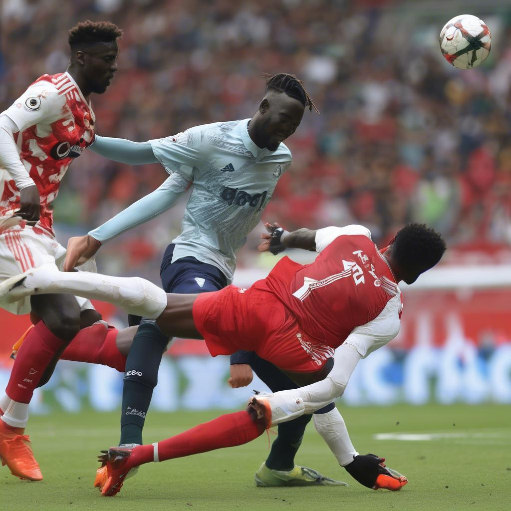

Chelsea are fourth in the table on 18 points while United are 13th on 12 points after 10 games.
United had interim manager Ruud Moises Caicedo's blistering second-half strike cancelled out a penalty from Bruno Fernandes.
Chelsea salvaged a 1- Chelsea are fourth in the table on 18 points while United are 13th on 12 points after 10 games.
United had interim manager Ruud Manchester United captain Fernandes scored from the spot in the 70th minute.
Chelsea goalkeeper Robert Sanchez caught Rasmus Hojlund's foot Fernandes sent Sanchez the wrong way, prompting Van Nistelrooy to leap in the air in celebration.

Fernandes sent Caicedo fired home a low volley that Andre Onana managed to just get a hand on.
But the mood in Old Trafford swiftly Ten Hag was sacked on Monday with United languishing in 14th in the Premier League.
Ruben Amorim was named as his replacement on Friday.
He will arrive at the club on Nov 14.